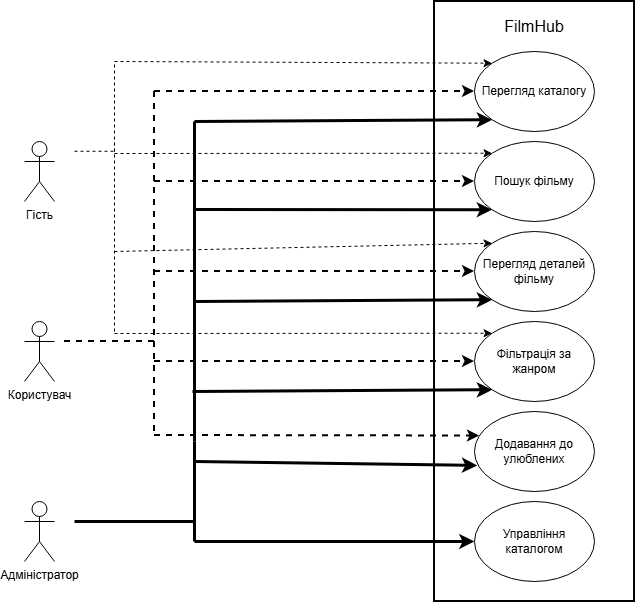
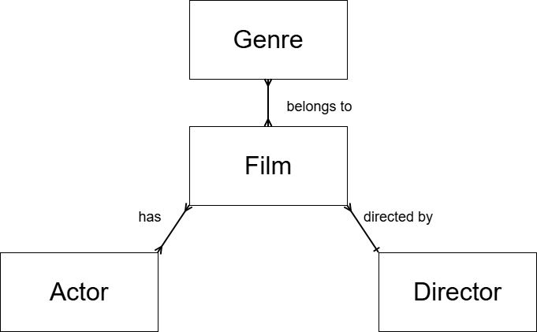

Зміст
- Вибір предметної області. Аналіз, моделювання та розроблення адаптивного web-застосунку
- Актуальність теми
- Мета роботи
- Завдання роботи
- Об’єкт роботи
- Предмет роботи
- Бізнес-логіка роботи
- Функціональні вимоги
- Нефункціональні вимоги
- Use-case діаграма
- ER-діаграма даних
- Висновок
Вибір предметної області. Аналіз, моделювання та розроблення адаптивного web-застосунку.
Актуальність теми
У сучасному світі кількість доступного кіноконтенту зростає щодня. Користувачі потребують зручного інструменту для швидкого пошуку та ознайомлення з інформацією про фільми на будь-яких пристроях. Розробка адаптивного веб-застосунку "FilmHub" дозволяє вирішити проблему зручного доступу до каталогу фільмів, забезпечуючи приємний користувацький досвід незалежно від розміру екрану.
Мета роботи
Метою лабораторної роботи було розробити адаптивний веб-застосунок FilmHub — сучасний онлайн-каталог фільмів з респонсивним дизайном. У рамках роботи буде реалізовано повноцінний фронтенд інтерфейсу: семантичну структуру сторінки (header, main, footer), адаптивну навігацію з бургер-меню, інтерактивну сітку інформаційних карток фільмів із постерами, а також візуальні ефекти та анімації.
Завдання роботи
- Проаналізувати предметну область та сформулювати вимоги до системи.
- Побудувати Use-case та ER-діаграми.
- Реалізувати основні структурні компоненти інтерфейсу (header, main, footer).
- Забезпечити адаптивність дизайну за допомогою Flexbox/Grid, media queries та відносних одиниць.
- Реалізувати бургер-меню та візуальні ефекти.
- Організувати файлову структуру проєкту та розмістити його в GitHub репозиторії.
Об’єкт роботи:
Онлайн-каталоги кінематографічного контенту
Предмет роботи:
Адаптивний веб-інтерфейс та функціональність системи "FilmHub"
Бізнес-логіка роботи:
Користувач відкриває головну сторінку, де бачить сітку популярних фільмів у вигляді інформаційних карток. Кожна картка містить постер, назву, рік виходу, рейтинг та жанр. Користувач може переглядати детальну інформацію про фільм, фільтрувати контент за жанрами та шукати фільми
Функціональні вимоги
- Відображення фільмів у вигляді адаптивної сітки карток.
- Адаптивне навігаційне меню з бургер-меню на мобільних пристроях.
- Header з логотипом "FilmHub" та навігацією (Головна, Каталог, Жанри, Про нас).
- Footer з контактною інформацією.
- Візуальні ефекти при наведенні на картки та плавне відкриття меню.
Нефункціональні вимоги
- Повна адаптивність на пристроях (desktop, tablet, mobile) за допомогою media queries.
- Використання Flexbox або CSS Grid.
- Відносні одиниці вимірювання (rem, %, vw, vh).
- Сучасний чистий дизайн.
- Швидке завантаження сторінки.
- Кросбраузерна сумісність.
Посилання на репозиторій GitHub
https://github.com/BobruikoOleksii-KPI/backend-2026
Use-case діаграма
Актори: Гість (незареєстрований користувач), Зареєстрований користувач, Адміністратор.
Головні use cases: Перегляд каталогу, Пошук фільму, Перегляд деталей фільму, Фільтрація за жанром, Додавання до улюблених, Управління каталогом (для адміністратора).
Рис. 1. Use-case діаграма системи FilmHub

ER-діаграма даних
Сутності:
• Film (id, title, year, rating, description, poster_url)
• Genre (id, name)
• Actor (id, name)
• Director (id, name)
Відносини:
• Film – many-to-many – Genre
• Film belongs to one Director
• Film has many Actors
Рис. 2. ER-діаграма даних для системи FilmHub

Скріншоти інтерфейсу
Рис. 3. Загальний вигляд веб-застосунку «FilmHub» на десктопному пристрої

Рис. 4. Мобільний вигляд з відкритим бургер-меню

Рис. 5. Демонстрація взаємодії з навігаційними посиланнями (спливаюче повідомлення-заглушка)

Висновок
В ході виконання лабораторної роботи було сформульовано ключові складові опису інформаційної системи, побудовано моделі та розроблено адаптивний інтерфейс веб-застосунку "FilmHub". Набуто практичні навички створення респонсивного дизайну, роботи з Git та GitHub. Можливе подальше удосконалення — підключення бази даних та backend-логіки.